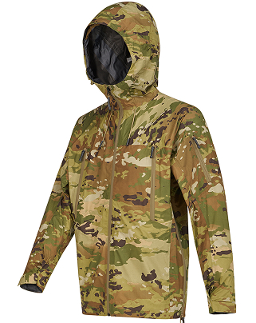
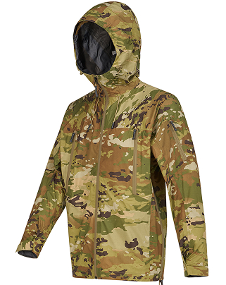

FOR OVER 30 YEARS, OUR RANGE OF INNOVATIVE
TECHNOLOGIES HAVE BEEN ENGINEERED TO PERFORM IN THE
HARSHEST CONDITIONS OFFERING THE HIGHEST LEVEL OF
PROTECTION, COMFORT AND RELIABILITY FOR MILITARY
PROFESSIONALS
Our reputation is built on our commitment to deliver
products that are “Fit for Use”. Through a
combination of fundimental sound science, extensive
laboratory testing, and field trials we work with
our brand partners to ensure each product does what
we say it will do and must measure up to the
specific requirements of the warfighter.
GORE-TEX FABRIC TECHNOLOGY:
Providing extended comfort, weather protection,
and value to the military for more than 30
years. Durably waterproof even after exposure to
common battlefield contaminants (oils, gun
lubricants, fuel, etc), Totally windproof,
keeping the chill out in the harshest
environments, and Very Breathable, allowing
sweat vapor.
WINDSTOPPER FABRIC BY GORE-TEX LABS:
Windproof and water-resistant to fend off light
rain and snow while maintaining insulation
performance. Even as the DWR treatment wears,
the breathable WINDSTOPPER® membrane ensures
lasting weather protection and comfort.


 >
>


 
